别把身家押在单一的热度上
情境：庄庄执意只进阿根廷的球衣，马拉多纳一禁赛，全砸在了手里。
遇到这种情况，可以这样做
- 押注单一热门，等于把命交给运气。
- 「都赖我」的复盘要有，但不许停在自责里。
- 留一手分散风险，摊子才不会一次清零。

Drama Recap · 剧情图文总结
第 8 集 · 假画穿帮
马拉多纳的禁赛令让球衣摊一夜凉透，徐胜利的剧本却被温导演一句「不是剧本」砸了回来；旅馆摆酒庆祝他拿到进组的机会，转头又为冉冉设计了一出「送画」的好戏——陶亮亮冒充画家当场露馅，这场闹剧怎么收场？
第 8 集，热度说凉就凉。马拉多纳尿检阳性、被禁赛十五个月的消息一落地，庄庄和徐胜利囤的阿根廷球衣全砸在了手里；另一边，温导演看完了徐胜利的剧本，劈头一句「这不是剧本」，又告诉他剧组在筹备、可以进组看看——被打击的人转眼又拿到了机会。旅馆为徐胜利摆酒庆祝，顺便替冉冉谋划「送画」的计策：陶亮亮冒充画家去拍马导的马屁，结果当场被点名画素描，慌得夺门而逃。穿帮之后，两个人索性摊牌回去道歉，马导却原谅了——还让冉冉「回去好好准备」。
清晨的院子里，陶亮亮几个正传着康顺营撂下的话：「那小子是不是穿球衣的？动我媳妇儿，我让他吃不了兜着走。」曹野嘴里嚼着东西：「那咱家徐哥不就危险了？」宝哥接话：「你俩现在就是一个锅里吃饭的兄弟。」
剧里的鸡毛蒜皮，往往是人生的缩影。这些情节不只是故事——当你在现实中遇到同样的处境时，它们能提醒你：先做什么、别做什么、怎么说才有效。
情境：庄庄执意只进阿根廷的球衣，马拉多纳一禁赛，全砸在了手里。
情境：温导演把徐胜利的剧本批得体无完肤，转头却给了他进组的机会。
情境：陶亮亮冒充画家登门吹画，马导一句「画张素描」就让他翻墙逃跑。
情境：陶亮亮和徐胜利折回去一五一十说了实话，马导反而原谅并给了机会。
情境：庄庄为了考团撤掉球衣摊，徐胜利替她收摊，也替她留了退路。
情境：徐胜利进组当剧务，薛主任交代「有求必应，随叫随到」。
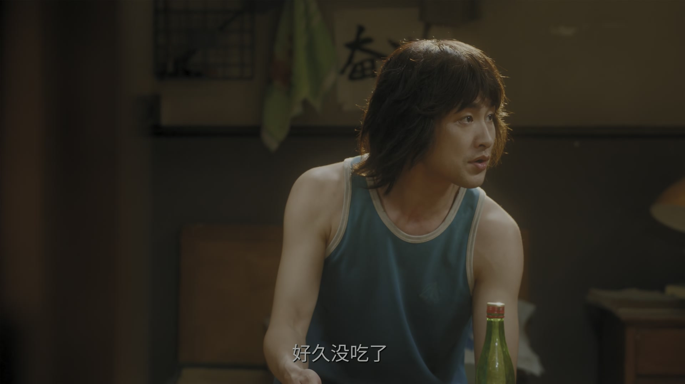
清晨的院子里，康顺营撂下的话被传了一遍：「那小子是不是穿球衣的？他敢动我媳妇儿，我让他吃不了兜着走。」
陶亮亮靠在门框上：「那咱家徐哥不就危险了？」曹野嚼着东西接口：「你俩现在就是一个锅里吃饭的兄弟，他出事你也不好过。」
宝哥擦着手走过来：「都别在这儿瞎琢磨了，该出摊出摊，兵来将挡。」几个人笑着散了，各忙各的。
话是玩笑话，可徐胜利和庄庄那摊球衣，已经在风口上了。
关键台词 · KEY QUOTES
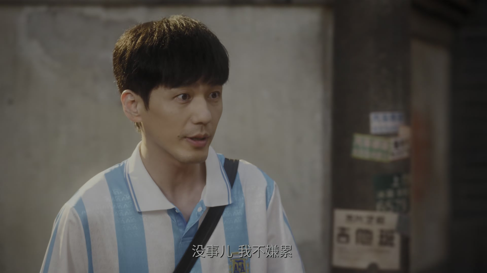
徐胜利蹬着三轮车，庄庄坐在后斗里，一路颠簸着穿过街巷。庄庄笑他：「你蹬车倒是挺稳的。」
徐胜利一本正经地自我介绍：「我是徐盛丽，多多关照。」庄庄愣了一下，笑弯了腰：「徐盛丽？你可别逗我了。」
到了地儿，两人支起摊子，把球衣一件件挂好。徐胜利念叨：「今儿是世界杯开幕的日子，怎么也得开张。」
庄庄翻出登记的小本子：「阿根廷的进三十件，英格兰的进……咦，这笔账好像记岔了。」两人正对着账，收音机里忽然插播新闻。
关键台词 · KEY QUOTES
收音机里，播音员的声音字正腔圆：「国际足联宣布，迭戈·马拉多纳因尿检呈阳性，被处以禁赛十五个月的处罚，阿根廷队的卫冕前景蒙上阴影。」
摊前的空气一下子安静了。庄庄手一松，球衣滑回杆上：「马拉多纳……禁赛了？」
徐胜利关了收音机：「别慌，兴许还有别的队能火。」可看着满杆子的蓝白条纹，这话自己都不信。
路过的行人三三两两停下来看一眼，又摇摇头走了。阿根廷的球衣，一夜之间从抢手货变成了压箱底。
关键台词 · KEY QUOTES
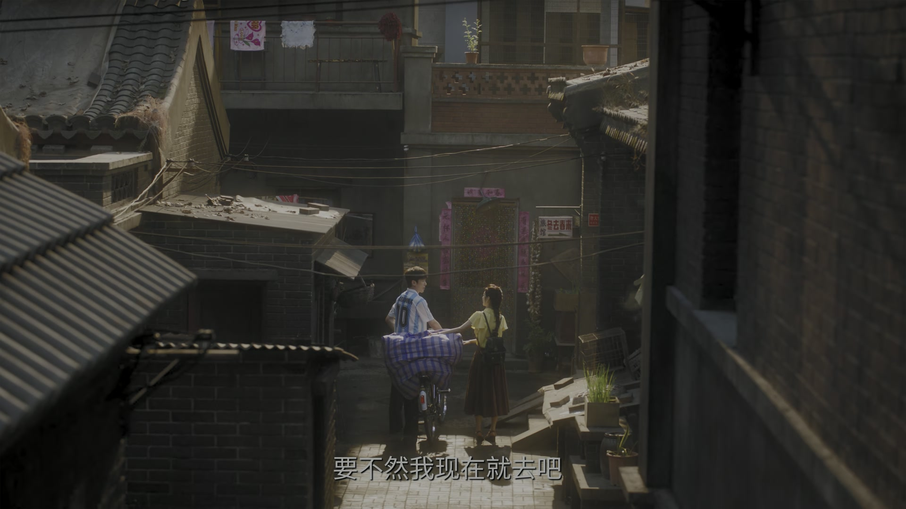
球衣摊前半天没人问价。庄庄站在杆子后面，眼圈慢慢红了：「当初你说多进几个球队的货，是我拦着你，就认准了阿根廷，都赖我。」
徐胜利把外套搭在肩上：「行了，天塌不下来，你先回去歇着。」庄庄摇头：「我跟你燕姐说好了，这衣服她帮我卖，我不能撒手。」
两个人谁也不肯走，就那么并排站着，守着满杆子的蓝白条纹。
庄庄忽然问：「老徐，你说咱们还能把它卖出去吗？」徐胜利没接话，只是把球衣又整理了一遍。
关键台词 · KEY QUOTES
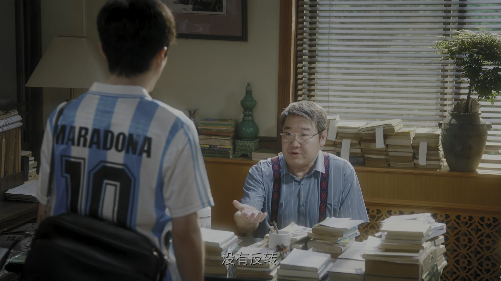
温导演的办公室里，一沓稿纸被轻轻放在桌上：「你写得太冗长了，废话太多。」他顿了顿，「这不是剧本。没有悬念，没有冲突，没有反转，观众凭什么看下去？」
徐胜利的喉结动了动：「导演，我断了后路，只能置死地而后生。我这辈子，就这一件事。」
温导演看着眼前的年轻人，终于松了口：「有个戏正在筹备，我让制片主任安排你进组看看，感受一下剧组的气氛。」
徐胜利猛地抬起头，眼眶发亮：「谢谢导演！」走出大楼，他站在台阶上，把稿纸往怀里一揣，撒腿就往旅馆跑。
关键台词 · KEY QUOTES
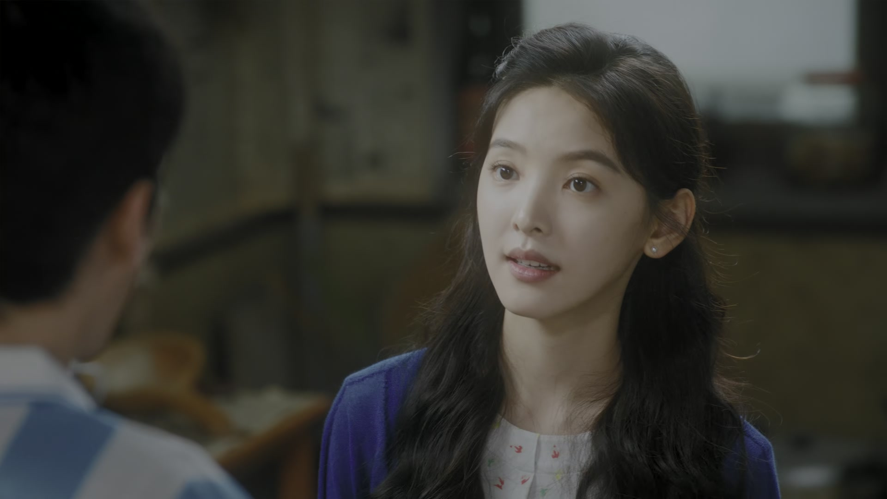
旅馆的灯全亮了。徐胜利举着酒杯，声音都在抖：「温导演看我剧本了，还让我进组！」一屋子人呼啦站起来，碰杯声此起彼伏。
酒过三巡，冉冉也来了。有人提起她的难处：「再想见马导，总得有个由头吧？」曹野把一卷画往桌上一拍：「用我这个，他上次夸过我的画。」
徐胜利摇头：「光送画不行，得靠人吹。得有人把这画吹得天花乱坠，马导才肯抬眼。」曹野一脸为难：「我真才实学，不会吹。」
宝哥操着一口方言：「我倒是想吹，就我这口音……」陶亮亮一拍桌子：「我来！萨克斯我都吹得了，一幅画还夸不出口？」众人起哄：「就是他了！」
关键台词 · KEY QUOTES
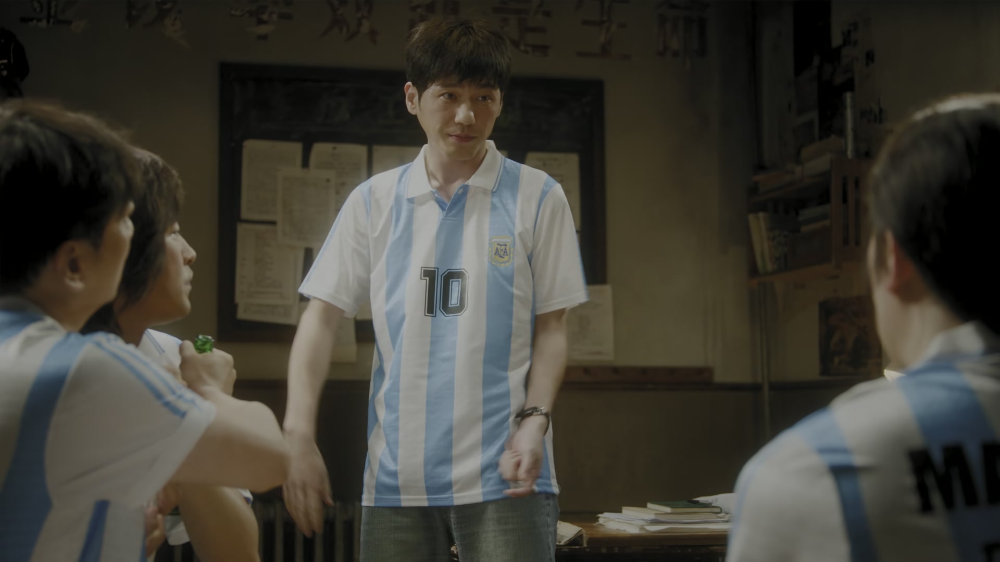
徐胜利和陶亮亮拎着画到了马导家门口。陶亮亮深吸一口气：「老徐，我可进去啦。」门铃按响，门内传来脚步声。
马导开门，目光扫过两人手里的画：「这是？」陶亮亮赶紧接话：「导演您好，我自学绘画，师从国内著名绘画大师，这幅画是我……」他舌头直打结，「我画了整整一年。」
马导把画展开看了看：「风格我不喜欢。」陶亮亮脸上的笑僵住：「啊？」马导又补了一句：「我喜欢画人物，人物才见功夫。」
「这样，你人就在这儿，给我画张素描，我看看你的功力。」陶亮亮手一抖：「画……素描？在这儿？」「就现在。」他擦了把汗：「那什么，我先去趟卫生间。」话音未落，人已经窜了出去。
关键台词 · KEY QUOTES
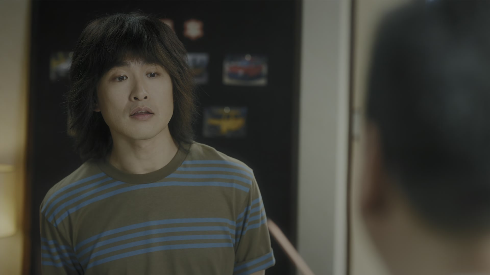
马导在客厅等了半天，人没回来。院子里，徐胜利把翻墙逃出来的陶亮亮堵了个正着：「你不是去卫生间吗？」
陶亮亮蹲在墙根直喘气：「老徐，我实在绷不住了。他让我现场画素描，我哪会啊！」徐胜利又气又笑：「先是假酒，再来个假人，这世界还有什么是真的？」
「我以为吹两句就完事了，谁知道他要考我。」陶亮亮耷拉着脑袋，「要不……咱回去跟人家说实话？」
徐胜利看着他，忽然笑了：「行，一五一十说清楚，比啥都强。走，回去认错。」两个人对视一眼，转身朝马导家的门走去。
关键台词 · KEY QUOTES
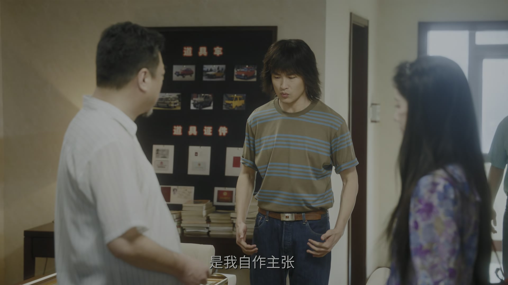
马导家的门再次被敲响。冉冉抢先一步开了口：「马导，上次因为那个假酒让您不高兴了，都是我们的错。」
徐胜利跟着低头：「这事不怪然然，要怪就怪我，是我自作主张。」陶亮亮也站直了：「画也不是我画的，是我们家曹野的。」
马导看着面前三个年轻人，忽然笑了：「画真不错，你形象也好，表达能力强。」他转向冉冉，「回去好好准备，有机会的。」
冉冉又惊又喜：「导演，我还会吹萨克斯！」马导点头：「多一样本事，多一条路。」走出门来，冉冉一路小跑，差点撞上电线杆。
关键台词 · KEY QUOTES
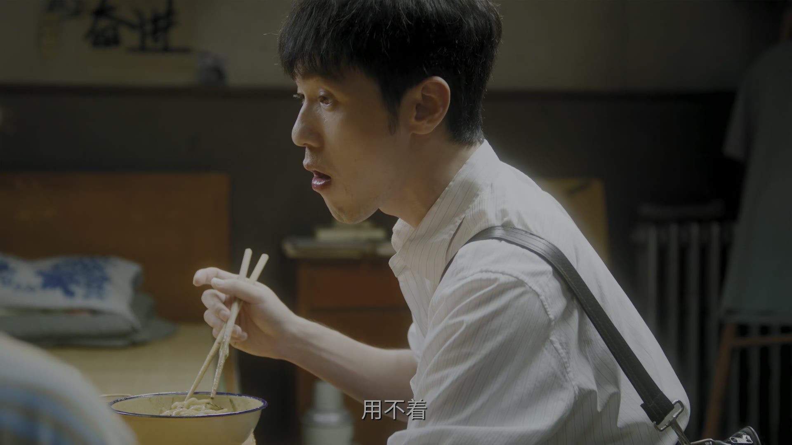
回去的路上，陶亮亮低着头，脚步比来的时候慢了许多：「老徐，你说我这人，是不是净给大伙添乱？」
徐胜利拍拍他的肩：「谁没年轻过？错了就认，认了就改，比那些装模作样的人强。」
陶亮亮想了想，又笑了：「那我下回，得真学着画几笔。」徐胜利被他逗乐了：「行，回头让曹野教你。」
夕阳把两个人的影子拉得很长。旅馆的院子里，饭菜的香味已经飘了出来。
关键台词 · KEY QUOTES
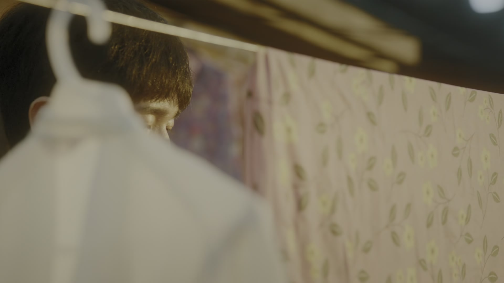
球衣摊前，庄庄把最后几件衣服收进箱子：「郑老师让我加课，我准备考团了。」她抬头看徐胜利，「这个摊子，先散了吧。」
徐胜利帮着叠衣服：「那你考上了，就不卖衣服了？」庄庄笑了：「考上了再说。你燕姐答应帮我卖，压不了货。」
两人把摊子收了，庄庄站在路边，忽然认真起来：「老徐，你说我要是考不上呢？」
「考不上就再考，北京城这么大，总有一盏灯是为你亮的。」庄庄没接话，拎着箱子走了几步，又回头看了他一眼。
关键台词 · KEY QUOTES
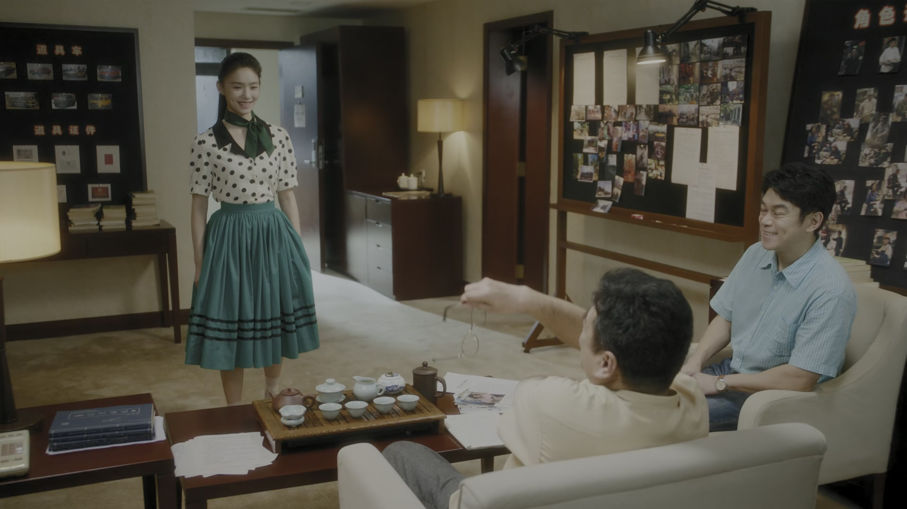
剧组里，薛主任把一沓表格递给徐胜利：「从今天起你就是剧务，早上六点二楼报到，有求必应，随叫随到。」徐胜利点头：「明白。」
晚上，旅馆又热闹起来。王云芳张罗了一桌好菜，众人围坐，齐刷刷举杯：「祝贺咱们然然试镜成功！」
小东北夹了一筷子菜打趣：「这戏能赚多少钱？放心，少不了你的房钱。」满桌子哄笑，冉冉红着脸回敬：「等我发了片酬，第一个请你吃饭！」
席间，庄庄悄悄走到徐胜利身边，塞给他一样东西：「穿上这个，进组好看着点。」徐胜利低头一看，是一件叠得整整齐齐的衬衫，领口还带着皂角的味道。窗外，万家灯火次第亮起。
关键台词 · KEY QUOTES
剧本被温导演批成「不是剧本」，却换来进组的机会；张罗「吹画」之计出了岔子，带陶亮亮折回去摊牌道歉；最后一集成了剧组剧务，还收到庄庄叠得整整齐齐的衬衫。
球衣滞销自责「都赖我」；为考团撤掉球衣摊，临走前塞给徐胜利一件叠好的衬衫。
自告奋勇冒充画家去吹曹野的画，被马导当场考素描，翻墙逃跑；随后回去认错，还学会了「错了就认，认了就改」。
追到马导家道歉，被原谅后兴奋得差点撞上电线杆；一句「我还会吹萨克斯」为她挣来一句「回去好好准备」，最终试镜成功。
把剧本批得毫不留情，也给了年轻人机会：「我让制片主任安排你进组看看。」
先是拒绝「吹画」，最后又原谅了三个年轻人，一句「回去好好准备」给了冉冉新的可能。
献出自己的画给冉冉开路，自嘲「我真才实学，不会吹」；画被夸「真不错」，也算另一种出头。
张罗庆功宴，招呼满院子的人为冉冉试镜成功碰杯。
打趣「这戏能赚多少钱？放心，少不了你的房钱」，一张嘴把饭桌的热闹顶了起来。
给徐胜利立规矩：「早上六点二楼报到，有求必应，随叫随到。」
头一天还是抢手货的阿根廷球衣，随着一条新闻瞬间滞销——热度来得多快，去得就有多快。
温导演的批评毫不留情，可批评之后是机会：进组看戏。被打脸和给糖吃，常常连着来。
陶亮亮冒充画家翻墙逃跑，徐胜利这句话把上一集和这一集的荒诞串成了同一个笑话。
穿帮之后没跑，三个人折回去摊牌道歉——马导一句「画真不错」当场翻篇。
临进组前，庄庄塞给徐胜利一件叠得整整齐齐的衬衫，领口带着皂角的味道。
马导给了冉冉这句话，她到底能不能拿到女三号、再奔着女一号去？
从写剧本的年轻人变成随叫随到的剧务，这间剧组会给他怎样的下一课？
撤了摊、加了课，郑老师说她有天分——考团这一关，能顺利过吗？
康顺营那句「穿球衣那小子」不是玩笑，徐胜利和庄庄的这层关系，迟早要撞上他。